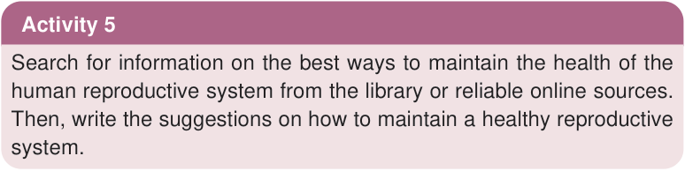

Disorders in the female reproductive system
These are conditions that interfere with the normal functioning of the female reproductive system. Some of these abnormalities include:
Infertility
Infertility is the condition whereby the female egg cannot be fertilised. Infertility in women can be caused by various factors, including failure of eggs to mature. This condition often results from hormonal imbalances whereby the ovaries may fail to produce sufficient oestrogen or progesterone.
Infertility in females may also be caused by sexually transmitted infections such as gonorrhoea, syphilis, and chlamydia. These infections can block the fallopian tubes, hence preventing the egg from passing through to allow fertilisation.
Cervical disorders
The cervix can be damaged due to complications during childbirth or due to infections within the cervix. This may result in a deformed cervix.
Menstrual disorders
These are problems related to timing, flow, or discomfort associated with a woman’s menstrual cycle. They include amenorrhea, which is a condition in which a matured female stops having her periods or misses them for a certain period of time without being pregnant. Menstrual disorders also include painful periods due cramps of the uterine wall, a condition termed as dysmenorrhea. They can also include excessively heavy or prolonged menstrual flow, a condition known as menorrhagia. These disorders may be caused by hormonal imbalances, particularly lack of oestrogen, genetic abnormalities, chronic illnesses, and stress. These disorders can be treated, hence, it is important to seek medical advice.
Caring for the reproductive system
Activity 5
Search for information on the best ways to maintain the health of the human reproductive system from the library or reliable online sources.
Then, write the suggestions on how to maintain a healthy reproductive system.
